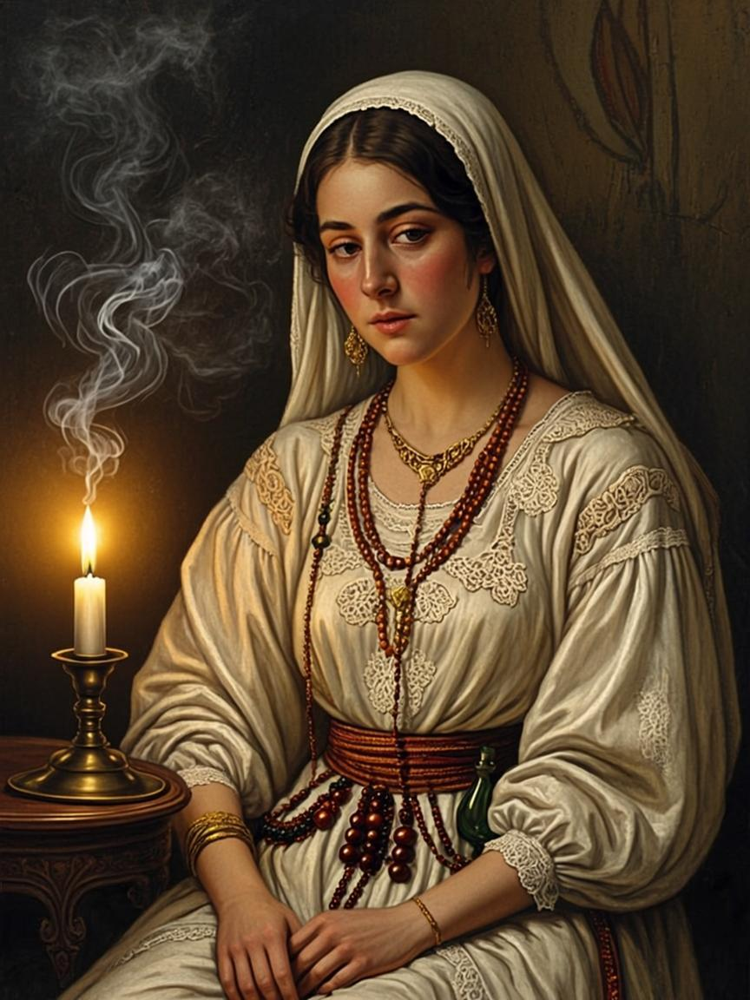
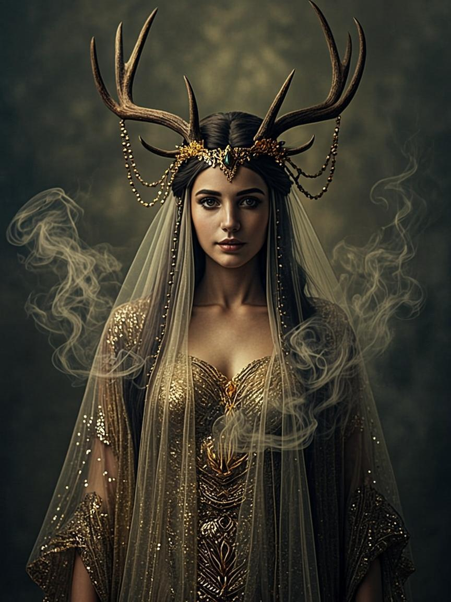
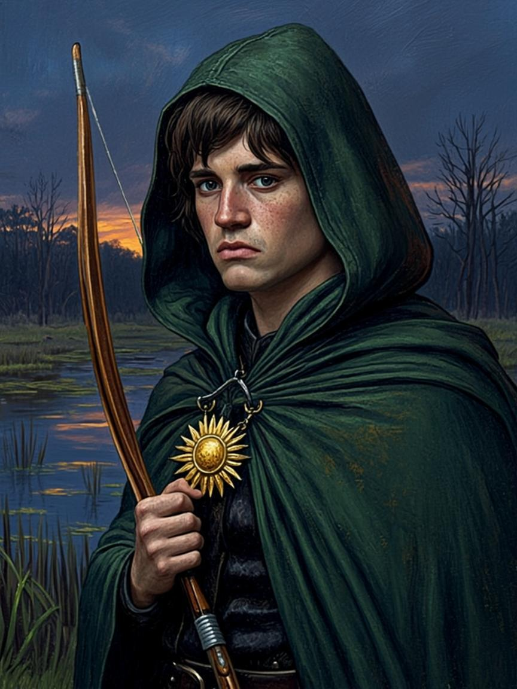
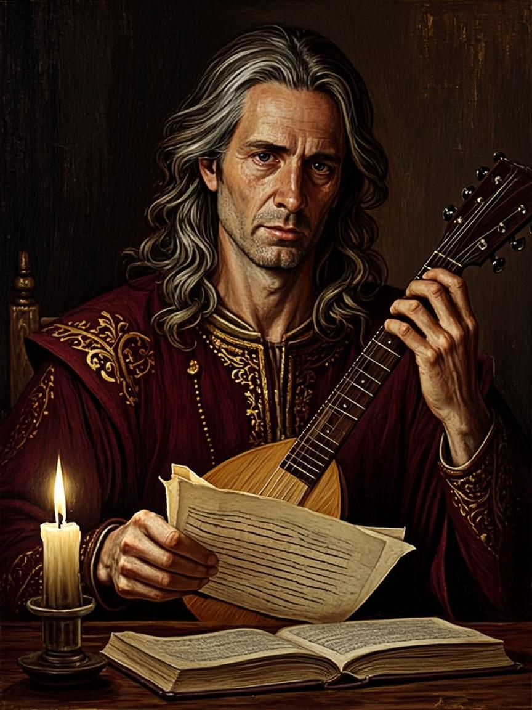

UNIQUE SELLING POINT
Companions who remember everything
In existing RPGs, companions are either eternal, or their attitude shifts by a single number, or they betray on script. In Zarnitsa, betrayal is a simulation: every companion carries a memory journal, a personal rupture threshold and a goal pursued even off-screen. The game continuously checks three conditions, and when they converge, the companion acts against the ataman — from sabotaging gear to a Night of Knives.
Memory journal
four kinds of tags: honor · blood · gold · faith
Personal threshold
five irreversible stages: from first doubt to the Night of Knives
Circumstance node
accumulated grudge, opportunity and incentive must converge at once
The Witcher 3 — set-dressing companions
Baldur’s Gate 3 — no life outside the party
Dragon Age — one approval number
ZARNITSA — betrayal as a simulation






6 companions × 5 stages × 4 endings — a matrix you cannot see in a single playthrough